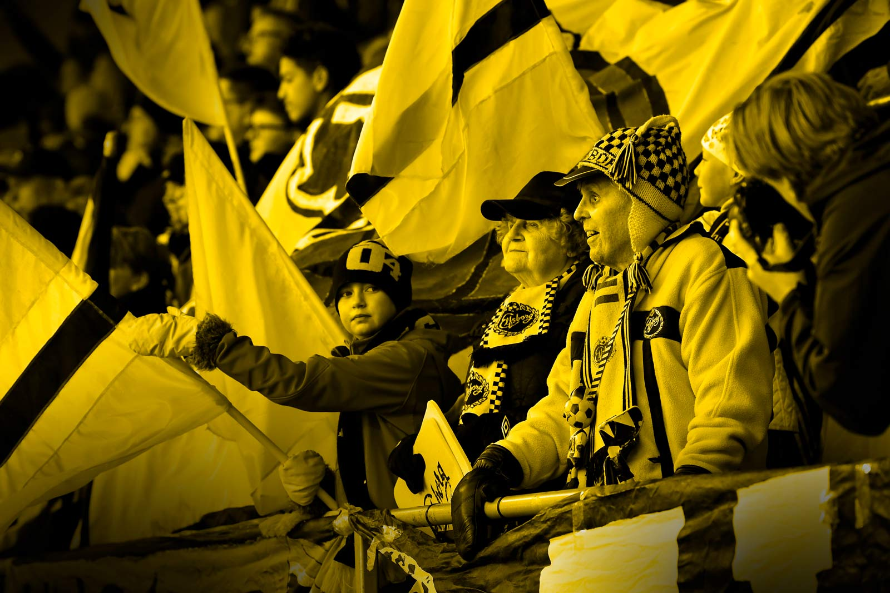
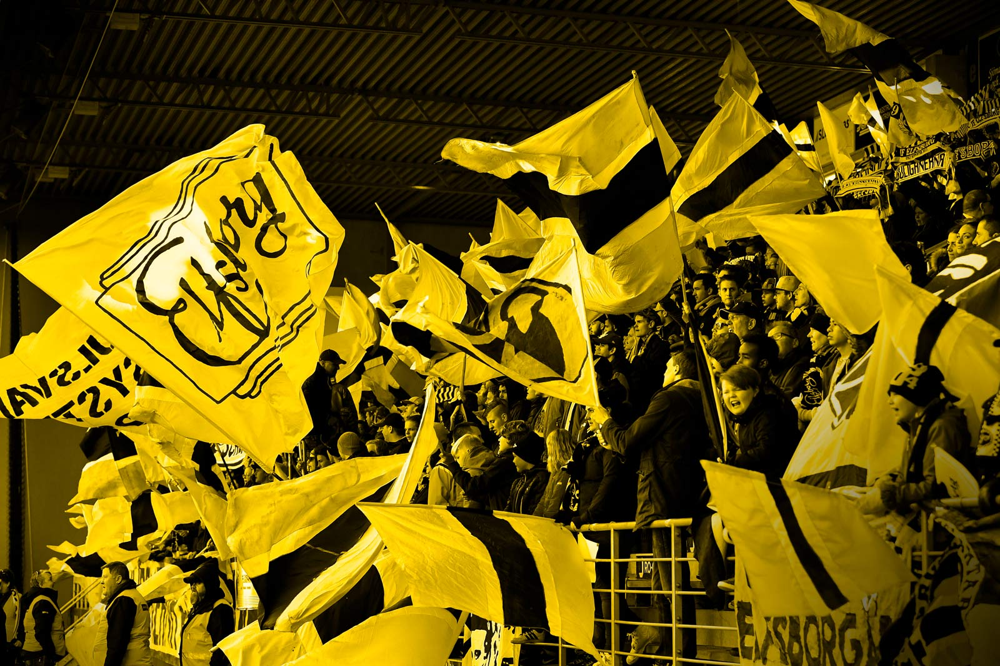

2020 har utvecklats till ett år som är allt annat än vad vi hade kunnat förvänta oss. Vi gick in i året med en stark framtidstro beredda att ta Nästa steg som förening. Vid den här tidpunkten skulle vi vanligtvis ha spelat en stor del av vårens matcher. Kärnan i hela IF Elfsborgs verksamhet handlar om att samla människor, om att vara Vi Tillsammans. Den rådande Coronapandemin medför hälsomässiga och ekonomiska konsekvenser som innebär matcher inför tomma läktare. En prövning där vi idag inte har svaret på hur länge eller hur omfattande nuvarande beslut påverkar oss.
Vår förening, IF Elfsborg blir den 26 juni 116 år. Coronapandemin är en av de största utmaningar vår förening gått igenom. Vi känner ett stort ansvar att hantera dess skadeverkningar på bästa möjliga sätt. All anställd personal inklusive spelare har redan gått ner i lön och ifrån föreningens sida finns beredskap att vidta ytterligare åtgärder. Vi har redan sett kraften som finns bland våra supportrar i de kampanjer som genomförts. Många är ni både privatpersoner och företag som redan har hört av sig för att bidra både ekonomiskt och på andra sätt. Tack!
Vi står tillsammans – är en plattform som vänder sig till alla våra medlemmar, sponsorer och supportrar. IF Elfsborg vill fortsätta att vara en samlingspunkt för mängder av människor, vi tror på styrkan att fortsätta att arbeta tillsammans. Vårt arbete nu, alla val som görs och alla insatser under året kommer att vara avgörande för vilken typ av förening IF Elfsborg ska vara när vi kommer ut på andra sidan av den här prövningen. I en tid av ovisshet och oro är det än viktigare i ett samhälle att ha saker att samlas kring. Att skapa drömmar och framtidstro. IF Elfsborg behöver ditt fortsatta stöd, nu och långsikigt och det finns flera olika sätt som du kan bidra!